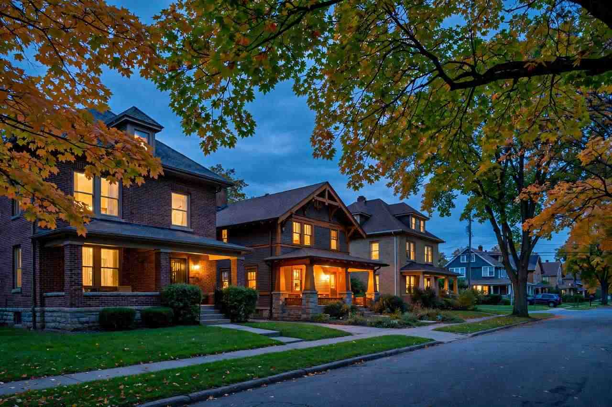

Rodent Control · Findlay, OH
Licensed Rodent Control in Findlay, OH
If rodents have moved into your Findlay home or business, Murvo can help today. Our local, licensed crews provide same-day inspection, targeted removal, durable exclusion, and cleanup, all under one flat-rate written quote with a written guarantee. No hourly billing and no surprise add-ons, just rodent specialists serving Findlay and communities throughout Hancock County every day of the week. Service covers 2 ZIP codes across Hancock County, including 45840, 45839, with same-day appointments where schedules allow.
24/7Availability
2ZIP codes covered
Same-dayResponse
Licensed · Upfront options · Written guarantees · Fully insured
Findlay at a glance
Local Rodent Control for Findlay, OH.
Hancock County
Countynorthwest Ohio
RegionToledo · 43 mi
Nearest metro82 miles northwest of Columbus
From Columbus2
ZIP codes covered Service by service in Findlay
Rodent Control Services Available in Findlay
Rodent-only specialists serving Findlay and Hancock County. Every service below is explained in local terms - the species involved, the entry points that matter in vintage duplexes and stone homes, brick bungalows, older single-family homes, and farm and rural properties, and the seasonal timing that decides whether a fix lasts.
- 01Rodent Control↗
- 02Rodent Inspection↗
- 03Rodent Removal↗
- 04Rodent Exclusion↗
- 05Rodent Proofing↗
- 06Rat Control↗
- 07Mice Control↗
- 08Mouse Removal↗
- 09Rat Removal↗
- 10Rodent Trapping↗
- 11Rodent Baiting↗
- 12Rodenticide Application↗
- 13Attic Rodent Removal↗
- 14Crawl Space Rodent Removal↗
- 15Wall Rodent Removal↗
- 16Kitchen Rodent Control↗
- 17Garage Rodent Control↗
- 18Commercial Rodent Control↗
- 19Residential Rodent Control↗
- 20Emergency Rodent Removal↗
- 21Same-Day Rodent Control↗
- 22Rodent Damage Repair↗
- 23Rodent Waste Cleanup↗
- 24Rodent Disinfection↗
- 25Rodent Odor Removal↗
- 26Dead Rodent Removal↗
- 27Rodent Dropping Cleanup↗
- 28Rodent Exclusion for Roofs↗
- 29Rodent Exclusion for Vents↗
- 30Rodent Exclusion for Chimneys↗
Rodent Control in Findlay
Rodent Control in Findlay
A single mouse sighting in a Findlay kitchen rarely means a single mouse. Rodents breed fast, contaminate food areas, and gnaw wiring long before the damage is obvious. Murvo responds with same-day appointments where available, a background-checked local crew, and a coordinated program of trapping, exclusion, cleanup guidance, and monitoring that keeps working after the first visit ends.
When you need rodent control in Findlay, the job starts with what is actually happening in your part of Hancock County. Murvo crews work Findlay every week, so they know how Norway rat (Rattus norvegicus) and House mouse (Mus musculus) behave around vintage duplexes and stone homes, brick bungalows, older single-family homes, and farm and rural properties here - and where they get in: basement foundations, alley-facing garage doors, sewer laterals, and gaps around utility lines and sills. We arrive equipped for the full job, confirm the flat rate in writing before work begins, and cover the whole Findlay area, including Van Buren, Arcadia. No call-center runaround and no open-ended hourly billing - just a local crew, a clear plan, and a written quote you approve first. Around McComb, North Baltimore, Vanlue, the pattern is similar: House mouse (Mus musculus) finds basement foundations, alley-facing garage doors, sewer laterals, and gaps around utility lines and sills first, and lasting rodent control has to close those routes.
The pattern in Hancock County is predictable, so the response should be methodical. First comes identification, because Norway rat (Rattus norvegicus) and House mouse (Mus musculus) nest and feed in different places. Traps then go where travel is proven, not where it is convenient, and catches are logged by location. Sealing follows only after activity drops, using materials matched to each opening. Finally, monitoring stays in place long enough to catch a late survivor or a new arrival, and those readings decide when the program closes. That discipline is what turns a busy first week into a genuinely quiet second month for the household.
Booking takes one call, and same-day appointments are available in most Findlay areas. Your technician inspects first, talks you through the plan in plain language, and only starts once you approve the written quote. Work is carried out in stages, with trap checks and sealing visits booked ahead. At the final visit we walk the finished work together and confirm monitoring is clear. Questions are answered at every stage, day or night.
In most of Findlay, we can offer a same-day appointment for rodent control, and our lines are open 24/7 for urgent cases like scratching in the walls or a rodent in a living area. Your technician inspects first, explains the plan, and quotes a flat rate in writing before any work begins, so help starts fast without surprises. Around Findlay, vintage duplexes and stone homes, brick bungalows, older single-family homes, and farm and rural properties give rodents the most cover, which is why entry points get checked before traps are set.
The honest answer is that it depends on species, activity level, and how much sealing your home needs, which is why Murvo inspects first and then gives you a flat-rate quote in writing. For national context only, Angi's 2026 data averages rat and mouse removal and control at $396, typically $189 to $655; that is not a Murvo price, and your written quote is the figure you pay.
Rodent Inspection in Findlay
Rodent Inspection in Findlay
You do not need to see a rodent to have a rodent problem in Findlay. Droppings in the attic, gnaw marks near basement foundations, alley-facing garage doors, sewer laterals, and gaps around utility lines and sills, or noises after dark are enough reason to book a rodent inspection. Murvo technicians check the whole property, photograph what they find, and give you a prioritized plan plus a flat-rate written quote for any work recommended.
In Findlay, rodent inspection is not a generic spray-and-go service. Rodents exploit basement foundations, alley-facing garage doors, sewer laterals, and gaps around utility lines and sills in vintage duplexes and stone homes, brick bungalows, older single-family homes, and farm and rural properties, and a fix that ignores those routes does not last. Murvo's Findlay team inspects first, shows you the evidence - droppings, gnaw marks, entry gaps - and then lays out the work with a flat-rate written quote. We serve all of Hancock County from Findlay, including Van Buren, Arcadia, and every job is covered by our written workmanship guarantee. Coverage for rodent inspection spans 2 ZIP codes in Hancock County, including 45840, 45839.
Think of the inspection as three passes. The review pass brings it together: species, likely numbers, contamination, and the order in which fixes should happen. Each pass is photographed, and nothing is recommended without evidence from one of those passes to support it. The exterior pass checks siding, vents, pipe entries, and roof junctions for gaps and rub marks. The interior pass covers attic insulation, crawl-space corners, and kitchen voids for droppings, nests, and gnawing. The report separates what rodents are doing now from what the structure merely allows them to do later.
Your part is simple: point out noises, droppings, and any past problems. Before leaving, you walk through the evidence together, discuss priorities, and decide what happens next, with no obligation attached. Ours is everything else. A background-checked technician arrives on time, protects access areas, and inspects inside and out against a set checklist. If you decide to proceed, those findings become the working plan, so no second survey is needed before approved repairs begin.
Inspections are the fastest way we help in Findlay: same-day appointments are available in most areas, and urgent calls are answered 24/7. A typical rodent inspection takes under an hour for most homes, and you leave the visit with photos, written findings, and a flat-rate quote for any work we recommend, so decisions never wait on us. Murvo's Findlay crews explain the finding either way, and the flat-rate quote leaves the decision with you.
Nationally, a professional rodent inspection typically runs $100 to $200 according to Angi's 2026 data, and it is often credited toward the job if you proceed. Murvo confirms your exact rodent inspection price before the visit and quotes any follow-up work as a flat rate in writing after inspection, so the figure you approve is the figure you pay, with no hourly billing.
Rodent Removal in Findlay
Rodent Removal in Findlay
Finding droppings in the kitchen or hearing scratching overhead in Findlay means rodents are already living indoors, and they will not leave on their own. Murvo's rodent removal clears active Norway rat (Rattus norvegicus) and House mouse (Mus musculus) with targeted trapping, removes animals hygienically, and closes the entry points behind them. One flat-rate written quote covers the program before work begins.
Homeowners in Findlay call Murvo for rodent removal because the problem here is specific: Norway rat (Rattus norvegicus) pressure around vintage duplexes and stone homes, brick bungalows, older single-family homes, and farm and rural properties, tight access at basement foundations, alley-facing garage doors, sewer laterals, and gaps around utility lines and sills, and activity that follows the local season. Our Hancock County crews diagnose the real source before recommending work, explain the options in plain language, and quote one flat rate in writing. Across Findlay - including Van Buren, Arcadia - every visit is backed by licensed, insured technicians and our written workmanship guarantee. Coverage for rodent removal spans 2 ZIP codes in Hancock County, including 45840, 45839.
Why trap first instead of reaching for poison? Because trapped animals can be counted, removed, and disposed of hygienically, while poisoned animals can die where nobody can reach them. Technicians therefore match traps to species and setting, work attics, voids, and kitchens in sequence, and retrieve any carcass promptly. Contaminated nesting material is bagged carefully, affected surfaces are disinfected before any cleaning, and dry sweeping of droppings is never used, since that spreads contamination into the air. The sequence ends with monitoring, because removal without a confirming check is a claim rather than a result.
Same-day removal appointments are available across much of Findlay for active infestations. Every stage is explained in plain language as work proceeds. After a quick inspection, your background-checked technician explains the trapping plan and gives you a flat-rate written quote; work starts only with your approval. Follow-up checks are booked before we leave, contaminated areas are made safe, and monitoring confirms the property is clear before we sign off. You keep copies of all visit records.
When rodents are active indoors in Findlay, waiting rarely helps. Rodent removal can usually start the same day you call, our line answers 24/7 for a rodent loose in a living area, and the first visit sets traps straight away. Scheduled returns then clear and reset them until monitoring shows the home is clear. In Hancock County, activity follows the local season, so timing the work matters as much as the method.
How many animals are active, which species they are, and how much sealing follows removal all shape the price, so we assess first and then quote one flat rate in writing. Angi's 2026 national context — an average of $396 and a typical $189 to $655 range for rat and mouse removal — is provided for comparison only; your written quote is the exact Murvo figure.
Rodent Exclusion in Findlay
Rodent Exclusion in Findlay
In vintage duplexes and stone homes, brick bungalows, older single-family homes, and farm and rural properties, exclusion is detective work as much as building work. Rub marks at basement foundations, alley-facing garage doors, sewer laterals, and gaps around utility lines and sills, droppings below a vent, and daylight under a door each point somewhere different in Hancock County homes. Our technicians follow those clues for Norway rat (Rattus norvegicus) and House mouse (Mus musculus), prioritize active openings, and leave inactive weaknesses clearly noted.
Homeowners in Findlay call Murvo for rodent exclusion because the problem here is specific: Norway rat (Rattus norvegicus) pressure around vintage duplexes and stone homes, brick bungalows, older single-family homes, and farm and rural properties, tight access at basement foundations, alley-facing garage doors, sewer laterals, and gaps around utility lines and sills, and activity that follows the local season. Our Hancock County crews diagnose the real source before recommending work, explain the options in plain language, and quote one flat rate in writing. Across Findlay - including Van Buren, Arcadia - every visit is backed by licensed, insured technicians and our written workmanship guarantee. Seasonal timing matters for rodent exclusion in Findlay: rodents surge in Findlay from October through April.
Exclusion begins with a full exterior survey, paying particular attention to junctions where different materials meet, because those seams and transitions open up as a building ages and settles. Each opening is sealed with materials matched to it: copper mesh packed into gaps, hardware cloth over vents, metal flashing at roof junctions, and quality sealants for smaller cracks. Door sweeps are fitted, pipe gaps closed, and specialist roof, vent, and chimney sealing finished to weatherproof standards. Active animals are trapped out first.
The visit starts with a check that no animals remain inside, using trapping and monitoring where needed. Once clear, your background-checked crew seals the agreed openings with chew-resistant materials, working cleanly around your home. Before leaving, we show you each finished seal, explain how it was protected, and confirm the guarantee paperwork. A later re-check confirms the seals are holding and activity has stopped. You approve the finished work before we close the job.
The first step is a survey, and in Findlay we can often schedule that survey the same day you call about rodent exclusion. Sealing follows once active animals are cleared — nothing is ever sealed inside — and most homes are fully sealed within days, with entry points near wiring or food areas handled first. The written quote for your Findlay property will spell out exactly which of these applies before any work starts.
For national context, Angi's 2026 data puts basic exclusion at $200 to $600, depending on access and the number of openings. That is a benchmark, not a Murvo price. After surveying your Findlay home, we list every opening that needs sealing and quote one flat rate in writing, so you pay for the work your property actually needs and nothing more.
Rodent Proofing in Findlay
Rodent Proofing in Findlay
As colder weather approaches Hancock County, rodents actively hunt for warm indoor shelter, and unsealed homes are found fast. A Murvo rodent proofing survey checks the roofline, vents, utility entries, and doors before that rush begins. Because proofing prevents infestations instead of reacting to them, it reduces reliance on baits and is backed by our written workmanship guarantee.
In Findlay, rodent proofing is not a generic spray-and-go service. Rodents exploit basement foundations, alley-facing garage doors, sewer laterals, and gaps around utility lines and sills in vintage duplexes and stone homes, brick bungalows, older single-family homes, and farm and rural properties, and a fix that ignores those routes does not last. Murvo's Findlay team inspects first, shows you the evidence - droppings, gnaw marks, entry gaps - and then lays out the work with a flat-rate written quote. We serve all of Hancock County from Findlay, including Van Buren, Arcadia, and every job is covered by our written workmanship guarantee. In Findlay, rodent proofing calls most often involve vintage duplexes and stone homes, brick bungalows, older single-family homes, and farm and rural properties, where basement foundations, alley-facing garage doors, sewer laterals, and gaps around utility lines and sills decide whether the fix holds.
Where proofing overlaps with structural exclusion, we use the same chew-resistant materials: copper mesh, hardware cloth, metal flashing, and durable sealants matched to each opening. Around kitchens, we coordinate sealing behind units and along pipe runs; in garages, we tackle stored-food and clutter harborage directly. The written plan distinguishes homeowner tasks from professional work, and seasonal re-checks after completion catch new gaps early, before they can turn into another indoor infestation for your household. That keeps protection current year after year.
Arrange a survey at a time that suits you; there is no emergency, so scheduling stays relaxed. You then receive a written quote separating essential work from optional improvements, and nothing proceeds without your say-so. Your technician walks every side of the property with you, photographs weak points, and talks through the plan in plain language. Staging the work is fine; essential sealing can proceed first while optional improvements wait until a season or budget that suits you better.
Proofing is planned work rather than an emergency, but you can still move fast: rodent proofing surveys in Findlay are often available the same day and always within a few days. Once you approve the plan, most work is finished in a single visit, ideally before colder weather drives rodents indoors. Murvo's Findlay crews explain the finding either way, and the flat-rate quote leaves the decision with you.
We survey your Findlay property first, separate the quick wins you can handle yourself from the specialist sealing, and quote the professional work as one flat rate in writing so spending can be staged. Angi's 2026 national context puts exclusion, the core of proofing, at $200 to $600 for basic work — a benchmark only, not a Murvo price.
Rat Control in Findlay
Rat Control in Findlay
What separates control from a temporary lull? Monitoring that continues after the last catch. Murvo keeps checking until routes stay quiet, removes trapped rats hygienically, and finishes with exclusion so replacements cannot follow the same path. Licensed, insured technicians document every visit, and urgent calls are answered 24/7.
Homeowners in Findlay call Murvo for rat control because the problem here is specific: Norway rat (Rattus norvegicus) pressure around vintage duplexes and stone homes, brick bungalows, older single-family homes, and farm and rural properties, tight access at basement foundations, alley-facing garage doors, sewer laterals, and gaps around utility lines and sills, and activity that follows the local season. Our Hancock County crews diagnose the real source before recommending work, explain the options in plain language, and quote one flat rate in writing. Across Findlay - including Van Buren, Arcadia - every visit is backed by licensed, insured technicians and our written workmanship guarantee. Around McComb, North Baltimore, Vanlue, the pattern is similar: House mouse (Mus musculus) finds basement foundations, alley-facing garage doors, sewer laterals, and gaps around utility lines and sills first, and lasting rat control has to close those routes.
Safety shapes every placement decision. Traps are positioned away from pet routes and play areas and explained to the household in advance. Where bait is genuinely necessary outdoors, it goes only inside locked, tamper-resistant stations, secured and labeled, never loose, and always alongside trapping and sealing rather than instead of them. Droppings are handled carefully: surfaces are disinfected before cleaning, never dry-swept, because disturbing dry material can spread contamination through the air. Households receive that safety briefing in plain terms before the first station or trap is ever left behind.
Call and describe where signs are strongest; that directs the first inspection. Approval starts the program the same visit, with follow-up checks booked ahead so momentum never depends on you calling back. Your technician maps routes and harborage, explains the pre-baiting plan honestly, including why results build over days, and provides the written quote. You will know after each visit what was caught, where placements changed, and what the next check is specifically looking for.
Rats do not wait, and neither do we: rat control in Findlay can usually start with a same-day inspection, and urgent calls are answered 24/7. Pre-baiting begins on the first visit once you approve the written quote, traps are set as soon as rats are feeding confidently, and scheduled checks keep the program moving until activity stops. In Hancock County, most cases involve the Norway rat (Rattus norvegicus) and the House mouse (Mus musculus), so the inspection focuses on their routes first.
Rat work varies with species, colony size, and how many entry points need sealing, so Murvo inspects first and quotes one flat rate in writing. For national context only, Angi's 2026 data averages rat control and removal at $396, typically $189 to $655. That benchmark is not a Murvo price; the written quote for your Findlay home is the exact figure you pay.
Mice Control in Findlay
Mice Control in Findlay
Small rice-like droppings, shredded nesting material, and faint scratching after dark are the classic signs mice have moved into a Findlay home. Murvo's mice control surveys activity and entry points, traps in clusters along the routes mice travel nightly, and seals gaps as small as a pencil width. One flat-rate written quote covers the program before work begins.
Homeowners in Findlay call Murvo for mice control because the problem here is specific: Norway rat (Rattus norvegicus) pressure around vintage duplexes and stone homes, brick bungalows, older single-family homes, and farm and rural properties, tight access at basement foundations, alley-facing garage doors, sewer laterals, and gaps around utility lines and sills, and activity that follows the local season. Our Hancock County crews diagnose the real source before recommending work, explain the options in plain language, and quote one flat rate in writing. Across Findlay - including Van Buren, Arcadia - every visit is backed by licensed, insured technicians and our written workmanship guarantee. In Findlay, mice control calls most often involve vintage duplexes and stone homes, brick bungalows, older single-family homes, and farm and rural properties, where basement foundations, alley-facing garage doors, sewer laterals, and gaps around utility lines and sills decide whether the fix holds.
Our integrated approach favors trapping and sealing over baits, with genuinely pet-safe options for family homes. Droppings in cabinets are never dry-swept; following CDC guidance, surfaces are disinfected first so contamination is not spread into the air, and nesting debris is bagged and removed. Food-storage advice removes the attraction that drew mice in, and sealing is completed as whole-home proofing so kitchens, attics, and voids stay clear after the program ends. Catch records show exactly how numbers fall each visit.
Book with one call and tell us which rooms show signs; same-day surveys are often possible. Your technician inspects kitchen, attic, and voids, explains the route map, and quotes in writing before traps are set. Check visits are scheduled immediately, and each one reports catches plainly until the final confirmation visit shows activity has stopped. The final confirmation matters, because mice can go quiet briefly while a nest remains, and monitoring distinguishes quiet from genuinely finished.
Mice multiply fast, so mice control in Findlay is built to start fast too: a survey can often be arranged the same day you call, with traps set on that first visit once the quote is approved. Because mice investigate new objects quickly, catches usually begin soon after, and check visits follow until a final confirmation shows activity has stopped. The written quote for your Findlay property will spell out exactly which of these applies before any work starts.
The number of rooms affected and the amount of sealing required set the price, so Murvo surveys first and quotes one flat rate in writing. For national context only, Angi's 2026 data averages rat and mouse control and removal at $396, typically $189 to $655 — not a Murvo price; your written quote is exact.
Mouse Removal in Findlay
Mouse Removal in Findlay
What does proper removal include beyond the traps themselves? Hygienic clearing of droppings and nesting, disinfection of affected cabinets, and sealing that stops the next mice using the same scent trails. Murvo delivers that complete finish with licensed, insured technicians and a written workmanship guarantee on the completed work.
In Findlay, mouse removal is not a generic spray-and-go service. Rodents exploit basement foundations, alley-facing garage doors, sewer laterals, and gaps around utility lines and sills in vintage duplexes and stone homes, brick bungalows, older single-family homes, and farm and rural properties, and a fix that ignores those routes does not last. Murvo's Findlay team inspects first, shows you the evidence - droppings, gnaw marks, entry gaps - and then lays out the work with a flat-rate written quote. We serve all of Hancock County from Findlay, including Van Buren, Arcadia, and every job is covered by our written workmanship guarantee. Homes near McComb tend to show activity first in Findlay, which is why inspections start with basement foundations, alley-facing garage doors, sewer laterals, and gaps around utility lines and sills.
We favor trap-based, no-poison removal, which is safer around children and pets and avoids mice dying in hidden voids. We also advise on safe cleaning of cabinets and storage areas afterwards, so your kitchen feels properly yours again once the program is complete and monitoring confirms zero activity. Sealing then closes the route permanently. Cleanup follows CDC guidance: droppings and nesting debris are never dry-swept, because that can spread contamination; surfaces are disinfected first, then waste is removed hygienically. That finish is guaranteed in writing.
For urgent mouse problems in Findlay, contact Murvo for a same-day response where available. Your technician surveys the home, explains the multi-trap plan, and confirms a flat-rate written quote before starting. Return visits are scheduled to clear and reset traps, and cleanup and sealing follow once catches reach zero. The final visit confirms the result and your written workmanship guarantee. You are updated after every visit, without ever chasing us.
In Findlay, mouse removal can often begin the same day you call, especially where mice are active in kitchens or living areas. The first visit surveys nesting sites and sets traps immediately after you approve the quote; because mice investigate traps quickly, catches usually start fast, and return visits continue until numbers reach zero. Around Findlay, vintage duplexes and stone homes, brick bungalows, older single-family homes, and farm and rural properties give rodents the most cover, which is why entry points get checked before traps are set.
Mouse removal cost reflects the number of rooms involved and how much sealing is needed, which is why Murvo surveys first and quotes a flat rate in writing. For national context only, Angi's 2026 data averages rat and mouse removal at $396, typically $189 to $655. That benchmark is not a Murvo price; your written quote covers your exact program.
Rat Removal in Findlay
Rat Removal in Findlay
Roof rats and Norway rats behave and enter very differently, and in Findlay the distinction decides where traps go and which gaps get sealed. vintage duplexes and stone homes, brick bungalows, older single-family homes, and farm and rural properties reached through basement foundations, alley-facing garage doors, sewer laterals, and gaps around utility lines and sills can hide attic colonies or basement harborage for months. Our licensed, background-checked technicians trace the full route, remove the colony, and sanitize contaminated areas where nests were found.
In Findlay, rat removal is not a generic spray-and-go service. Rodents exploit basement foundations, alley-facing garage doors, sewer laterals, and gaps around utility lines and sills in vintage duplexes and stone homes, brick bungalows, older single-family homes, and farm and rural properties, and a fix that ignores those routes does not last. Murvo's Findlay team inspects first, shows you the evidence - droppings, gnaw marks, entry gaps - and then lays out the work with a flat-rate written quote. We serve all of Hancock County from Findlay, including Van Buren, Arcadia, and every job is covered by our written workmanship guarantee. The Findlay crews who handle rat removal also handle the follow-through - proofing, cleanup, and monitoring - so one visit can close the whole problem.
Scale determines everything, so assessment precedes action. Technicians establish species, estimate colony size from droppings and runways, and locate harborage before placing a single trap. Pre-baiting unset traps then builds feeding confidence in these naturally cautious animals. Once set, traps are checked frequently, animals are removed hygienically, and placements shift as activity contracts toward its last pockets. Attic colonies receive dedicated work overhead, while any carcass in a void is retrieved before odor develops. Visit notes record weather and access too, since both affect rat movement and help explain any slower nights.
Help the program by securing food, clearing access to the attic or basement, and leaving traps exactly where placed. Sign-off includes the documented evidence, your guarantee in writing, and practical proofing guidance tailored to how rats reached your property in the first place. Your background-checked technician handles removal, adjustments, sanitation, and the final monitoring period. You also receive guidance on drains, vegetation, and storage specific to your property, aimed at discouraging the next colony from settling.
In Findlay, rat removal can usually start the same day you call, with 24/7 answering for rats active in living areas. Pre-baiting begins on the first visit after you approve the written quote, and traps are set once rats feed confidently, typically within days. Repeat visits then run frequently until monitoring confirms the colony is gone. Murvo's Findlay crews explain the finding either way, and the flat-rate quote leaves the decision with you.
Rat removal pricing depends on colony size, access, and the sealing needed afterwards, so Murvo assesses your property first and quotes a flat rate in writing. For national context only, Angi's 2026 data averages rat removal at $396, typically $189 to $655. That is a benchmark, not a Murvo price, and your written quote covers the full program described.
Rodent Trapping in Findlay
Rodent Trapping in Findlay
Why choose trapping over poison in a family home? Every result is visible, countable, and removable, with no chemicals loose indoors and no animals dying in hidden voids. Murvo offers snap, multi-catch, and live-capture options, explains each placement for pet and child safety, and guarantees the finished program in writing.
When you need rodent trapping in Findlay, the job starts with what is actually happening in your part of Hancock County. Murvo crews work Findlay every week, so they know how Norway rat (Rattus norvegicus) and House mouse (Mus musculus) behave around vintage duplexes and stone homes, brick bungalows, older single-family homes, and farm and rural properties here - and where they get in: basement foundations, alley-facing garage doors, sewer laterals, and gaps around utility lines and sills. We arrive equipped for the full job, confirm the flat rate in writing before work begins, and cover the whole Findlay area, including Van Buren, Arcadia. No call-center runaround and no open-ended hourly billing - just a local crew, a clear plan, and a written quote you approve first. Seasonal timing matters for rodent trapping in Findlay: rodents surge in Findlay from October through April.
A trapping program starts with inspection: identifying the species, mapping runways, and finding where droppings and rub marks show real travel. For rats, we pre-bait unset traps for several days, a step most DIY attempts skip, then set them for maximum effect. Mice receive clustered traps at hotspots. Technicians return on schedule to clear, reset, and record every catch. Traps are set perpendicular to walls and along beams, pipes, and fence lines, matched to the setting. Placements shift as activity patterns change.
After booking, we confirm your time window and any pet or child considerations for trap placement. Follow-up checks are booked ahead, catches are removed promptly and hygienically, and placements are adjusted as the pattern changes. The program ends with a monitoring check and a clear written summary. On arrival, your background-checked technician explains each device location and what to expect between visits. You always know what was caught and where.
In Findlay, a rodent trapping program can usually start the same day you call, with traps placed or pre-baiting begun on the first visit after you approve the quote. Mice often investigate within the first night, while wary rats need a few days of pre-baiting before traps are set. Scheduled checks then keep the program moving until numbers reach zero. The written quote for your Findlay property will spell out exactly which of these applies before any work starts.
Rather than charging by the trap or by the visit, Murvo inspects first and quotes rodent trapping as one flat rate in writing for the complete program, including its check visits. Price depends on species, activity level, and how many checks are needed, and there is no hourly billing at any stage, so there are no per-visit surprises.
Rodent Baiting in Findlay
Rodent Baiting in Findlay
Baiting suits established rat activity outdoors or in garages around Findlay, where droppings keep returning despite traps. Even then, our approach is exclusion-first: seal the entry points around basement foundations, alley-facing garage doors, sewer laterals, and gaps around utility lines and sills, trap what is already inside, and use locked stations only to reduce outdoor pressure. Stations are labeled, secured, photographed, and removed once monitoring shows activity has ended.
In Findlay, rodent baiting is not a generic spray-and-go service. Rodents exploit basement foundations, alley-facing garage doors, sewer laterals, and gaps around utility lines and sills in vintage duplexes and stone homes, brick bungalows, older single-family homes, and farm and rural properties, and a fix that ignores those routes does not last. Murvo's Findlay team inspects first, shows you the evidence - droppings, gnaw marks, entry gaps - and then lays out the work with a flat-rate written quote. We serve all of Hancock County from Findlay, including Van Buren, Arcadia, and every job is covered by our written workmanship guarantee. In Findlay, rodent baiting calls most often involve vintage duplexes and stone homes, brick bungalows, older single-family homes, and farm and rural properties, where basement foundations, alley-facing garage doors, sewer laterals, and gaps around utility lines and sills decide whether the fix holds.
Baiting here sits inside a wider sequence, never outside it. Each station is anchored, labeled, and photographed, with its location recorded. Monitoring visits log consumption precisely, and falling consumption, confirmed by other signs, decides when stations are reduced and finally removed altogether. Inspection maps activity and identifies where pressure originates. Exclusion work seals the structure, trapping clears animals already indoors, and only then do locked stations address the outdoor population along fence lines and runways. Those logs become especially important when activity fades, because several quiet checks must agree before stations come out.
Booking rodent baiting in Findlay starts with an inspection, not a station. Monitoring visits are scheduled before we leave, and stations come out once activity is confirmed clear. Your technician maps activity, reviews pet, child, and wildlife concerns with you, and confirms a flat-rate written quote before anything is placed. Approved stations are installed locked and labeled the same visit, with locations photographed for you. Your written guarantee covers the full program.
In Findlay, rodent baiting starts with an inspection visit we can often arrange the same day you call. Stations are only placed after activity is mapped and you approve the written quote and each location, so setup is deliberate rather than rushed. Monitoring visits then run on a fixed schedule until consumption stops and activity is confirmed clear. In Hancock County, activity follows the local season, so timing the work matters as much as the method.
How many locked stations your property needs and how long monitoring runs determine the cost, so Murvo inspects and maps activity first, then quotes one flat rate in writing covering placement and scheduled checks. There are no per-visit surprises, and because the approach is exclusion-first, the aim is to reduce and eventually remove stations rather than maintain them forever.
Rodenticide Application in Findlay
Rodenticide Application in Findlay
In vintage duplexes and stone homes, brick bungalows, older single-family homes, and farm and rural properties, product choice is only half the decision; placement and oversight matter just as much near basement foundations, alley-facing garage doors, sewer laterals, and gaps around utility lines and sills routes in Hancock County. Licensed Murvo technicians use tamper-resistant locked stations exclusively, map and label every unit, record amounts at each visit, and retrieve accessible carcasses promptly to limit odor and secondary risks.
Homeowners in Findlay call Murvo for rodenticide application because the problem here is specific: Norway rat (Rattus norvegicus) pressure around vintage duplexes and stone homes, brick bungalows, older single-family homes, and farm and rural properties, tight access at basement foundations, alley-facing garage doors, sewer laterals, and gaps around utility lines and sills, and activity that follows the local season. Our Hancock County crews diagnose the real source before recommending work, explain the options in plain language, and quote one flat rate in writing. Across Findlay - including Van Buren, Arcadia - every visit is backed by licensed, insured technicians and our written workmanship guarantee. Seasonal timing matters for rodenticide application in Findlay: rodents surge in Findlay from October through April.
Monitoring data guides the whole treatment: whether it continues, changes product, or stops entirely in favor of proofing alone. Dead rodents are retrieved promptly where accessible, stations are kept away from pet and child areas, and every product used is documented with its label and safety information, so nothing applied at your property is ever hidden from you. We prioritize sealing entry points with exclusion and physical removal so dependence on chemical control shrinks visit by visit. State restrictions are checked before product selection.
Booking rodenticide application in Findlay starts with an inspection visit, often available the same day. Your licensed technician confirms whether treatment is justified, explains safer alternatives first, and gives you a flat-rate written quote before anything is applied. If you proceed, stations are installed locked and labeled, monitoring visits are scheduled, and treatment continues only while monitoring data supports it, under our written workmanship guarantee. You can stop the program at any point.
No responsible rodenticide application starts without an inspection, and in Findlay that inspection can often be scheduled the same day you call. If treatment is justified and you approve the written quote, locked stations are installed on that visit. Monitoring then runs on schedule, and treatment stops as soon as the data shows activity has ended. In Hancock County, most cases involve the Norway rat (Rattus norvegicus) and the House mouse (Mus musculus), so the inspection focuses on their routes first.
Application cost depends on the number of locked stations, the product required under Ohio rules, and how long monitoring runs. Murvo inspects first, explains whether trapping or exclusion could avoid chemical control entirely, and then quotes one flat rate in writing before work begins. The quote covers scheduled monitoring visits, so there are no per-visit surprises later.
Attic Rodent Removal in Findlay
Attic Rodent Removal in Findlay
When chewed wiring appears overhead, treat it as urgent; damaged cables are a real fire risk. Murvo prioritizes those Findlay attics, clears animals with targeted trapping rather than poison, leaves monitoring briefly after sealing to confirm nothing remains inside, and backs the finished work with a written workmanship guarantee.
When you need attic rodent removal in Findlay, the job starts with what is actually happening in your part of Hancock County. Murvo crews work Findlay every week, so they know how Norway rat (Rattus norvegicus) and House mouse (Mus musculus) behave around vintage duplexes and stone homes, brick bungalows, older single-family homes, and farm and rural properties here - and where they get in: basement foundations, alley-facing garage doors, sewer laterals, and gaps around utility lines and sills. We arrive equipped for the full job, confirm the flat rate in writing before work begins, and cover the whole Findlay area, including Van Buren, Arcadia. No call-center runaround and no open-ended hourly billing - just a local crew, a clear plan, and a written quote you approve first. Around McComb, North Baltimore, Vanlue, the pattern is similar: House mouse (Mus musculus) finds basement foundations, alley-facing garage doors, sewer laterals, and gaps around utility lines and sills first, and lasting attic rodent removal has to close those routes.
Attic work divides into clearing, closing, and confirming. Closing means roofline exclusion: metal mesh and sealed flashing at eaves, vents, and junctions, plus advice on branches bridging animals onto the roof. Confirming means monitoring traps left briefly after sealing, proving the space is empty. Photographs document conditions at each stage, including insulation damage and any wiring concerns found overhead. Clearing means targeted traps set where droppings and runways concentrate, checked on schedule until catches end. Before-and-after photographs make that sequence visible, including exactly which roofline openings were open at the start.
After booking, we confirm safe attic access and any pets or stored items to work around. On arrival, your background-checked technician inspects, explains the plan in plain language, and starts trapping once you approve the written quote. Follow-up visits are booked ahead to clear traps and complete sealing. A final monitoring check and walkthrough confirm the result before we close the job. Insulation and wiring findings are reported to you too.
In Findlay, attic rodent removal visits are often available the same day, and we prioritize attics where chewed wiring creates a fire risk. Trapping starts on the first visit after you approve the written quote, checks run on schedule, and most attics are cleared and sealed within days, with monitoring left briefly to confirm nothing remains inside. Around Findlay, vintage duplexes and stone homes, brick bungalows, older single-family homes, and farm and rural properties give rodents the most cover, which is why entry points get checked before traps are set.
Attic costs depend on how many animals are active, how much sealing the roofline needs, and whether contaminated insulation requires cleanup, so Murvo inspects first and quotes one flat rate in writing. That quote covers the removal program described, with cleanup options priced separately in writing before you decide, so there are no surprises once work is underway.
Crawl Space Rodent Removal in Findlay
Crawl Space Rodent Removal in Findlay
Droppings under the house, a torn vapor barrier, and smells drifting up through the floors are classic signs rodents are living beneath your Findlay home. Murvo's crawl space rodent removal inspects the under-home space, traps active animals there, and seals foundation vents and gaps. Because activity below often connects to the attic through wall voids, we trace the full route.
Homeowners in Findlay call Murvo for crawl space rodent removal because the problem here is specific: Norway rat (Rattus norvegicus) pressure around vintage duplexes and stone homes, brick bungalows, older single-family homes, and farm and rural properties, tight access at basement foundations, alley-facing garage doors, sewer laterals, and gaps around utility lines and sills, and activity that follows the local season. Our Hancock County crews diagnose the real source before recommending work, explain the options in plain language, and quote one flat rate in writing. Across Findlay - including Van Buren, Arcadia - every visit is backed by licensed, insured technicians and our written workmanship guarantee. Coverage for crawl space rodent removal spans 2 ZIP codes in Hancock County, including 45840, 45839.
Work below a home follows a clear order. Trapping then clears active animals on scheduled checks. Only after clearance does exclusion begin: sturdy mesh across foundation vents, sealing around piers and plumbing penetrations, and secure refitting of access panels. Waste cleanup removes droppings and nesting, and monitoring checks afterwards confirm the space has stayed quiet before the job closes. Inspection comes first, with photographs establishing species, nesting sites, and damage to vapor barrier and pipe insulation. That photographic record matters later, because conditions under a home are easy to forget once panels close again.
Before the visit, unlock crawl-space access and mention any known leaks or standing water. Sign-off includes a walkthrough of the documented results, photographs of finished sealing, and your guarantee confirmed in writing for the completed work. Your background-checked technician inspects with protective equipment, sets traps at active areas after approval, and books follow-up visits ahead. Moisture findings are included in the closing notes, since fixing leaks and standing water lowers rodent pressure long after removal ends.
For crawl space rodent removal in Findlay, inspections are usually arranged within a few days — and sooner when odors are drifting into living areas or activity sounds heavy. Trapping begins on the first visit after you approve the written quote, clearance and sealing follow in sequence, and monitoring stays in place until the space below is confirmed quiet. Around Findlay, vintage duplexes and stone homes, brick bungalows, older single-family homes, and farm and rural properties give rodents the most cover, which is why entry points get checked before traps are set.
Access, the number of vents and gaps to seal, and whether waste cleanup is required all shape crawl-space pricing, so Murvo inspects first and quotes one flat rate in writing. Cleanup options are priced in writing before you decide whether to include them, and there are no surprise charges for extra vents within the agreed scope.
Wall Rodent Removal in Findlay
Wall Rodent Removal in Findlay
Wall voids are hidden highways through vintage duplexes and stone homes, brick bungalows, older single-family homes, and farm and rural properties in Findlay: mice travel them between kitchens and attics, and rats use them to reach food unseen via basement foundations, alley-facing garage doors, sewer laterals, and gaps around utility lines and sills. Our technicians carry inspection cameras for accessible voids, helping locate nests without opening large sections of drywall. If an animal has already died in the wall, retrieval and sanitation are handled too.
In Findlay, wall rodent removal is not a generic spray-and-go service. Rodents exploit basement foundations, alley-facing garage doors, sewer laterals, and gaps around utility lines and sills in vintage duplexes and stone homes, brick bungalows, older single-family homes, and farm and rural properties, and a fix that ignores those routes does not last. Murvo's Findlay team inspects first, shows you the evidence - droppings, gnaw marks, entry gaps - and then lays out the work with a flat-rate written quote. We serve all of Hancock County from Findlay, including Van Buren, Arcadia, and every job is covered by our written workmanship guarantee. Coverage for wall rodent removal spans 2 ZIP codes in Hancock County, including 45840, 45839.
Once the void is clear, the route gets closed and the space made safe. If a rodent has died inside, retrieval is followed by sanitation: contaminated material is never dry-swept, surfaces are disinfected first, and odor treatment discourages new animals from investigating. Monitoring at key access points and repeat quiet-wall checks then confirm silence before any minimal, agreed access cut is made good. Baseboard and pipe gaps linked to kitchen activity are sealed as part of wider proofing. Only then is the job closed, with the monitoring record and any sanitation work documented for you.
Between visits, note the times and rooms where sounds continue, since that pattern guides adjustments. Sign-off happens only when monitoring confirms silence, sealing and sanitation are complete, and your guarantee paperwork is confirmed in writing. Your background-checked technician clears traps, checks connected voids, and runs quiet checks at varied times of day. Silence is checked more than once before sign-off, because a single quiet evening can mislead when an animal simply moves elsewhere.
In Findlay, wall rodent removal locating visits are often available the same day you call, especially for persistent scratching keeping you awake. Trapping is set at access points on that first visit once you approve the written quote, and because rodents travel the void nightly, results usually follow within days, confirmed by quiet-wall checks before we sign off. A Findlay inspection confirms it on site - dropping size, gnaw marks, and entry points tell the story quickly.
How precisely the activity can be located, and whether a minimal access cut turns out to be needed, decide the price of wall work. Murvo therefore locates the activity first and quotes a flat rate in writing, covering the trapping, sealing, and monitoring in your plan, so wall access never becomes an open-ended bill.
Kitchen Rodent Control in Findlay
Kitchen Rodent Control in Findlay
Behind the stove is where the trouble usually hides. Warmth, crumbs and a drip under the sink draw Norway rat (Rattus norvegicus) and House mouse (Mus musculus) night after night in Findlay kitchens. Murvo clears the activity, blocks the gaps they travel through, and gives you a flat-rate written quote before any work begins at your home.
Homeowners in Findlay call Murvo for kitchen rodent control because the problem here is specific: Norway rat (Rattus norvegicus) pressure around vintage duplexes and stone homes, brick bungalows, older single-family homes, and farm and rural properties, tight access at basement foundations, alley-facing garage doors, sewer laterals, and gaps around utility lines and sills, and activity that follows the local season. Our Hancock County crews diagnose the real source before recommending work, explain the options in plain language, and quote one flat rate in writing. Across Findlay - including Van Buren, Arcadia - every visit is backed by licensed, insured technicians and our written workmanship guarantee. Around McComb, North Baltimore, Vanlue, the pattern is similar: House mouse (Mus musculus) finds basement foundations, alley-facing garage doors, sewer laterals, and gaps around utility lines and sills first, and lasting kitchen rodent control has to close those routes.
Work begins with a kitchen-focused inspection behind fridges, ovens and sinks, inside cabinets and along kickboards, reading droppings and grease marks to identify the species and its routes. Discreet traps are placed away from food preparation surfaces, never loose poison where children, pets or food could reach it. We then trace activity into wall voids and adjoining rooms, seal gaps around waste pipes and cabinet holes with durable materials, disinfect contaminated areas, and monitor until activity stops completely. Nothing is left to guesswork at any stage.
Tell us what you noticed, and we will schedule a visit that fits around meals and family routines. With your approval, trapping and sealing begin, followed by cleaning of affected areas. The technician inspects first, explains the findings in plain terms, and puts the price in writing. Later checks review traps and monitors, and we do not close the visit series until the kitchen shows no fresh signs of rodent activity at all.
You can reach us by phone 24/7, and reports of droppings close to food preparation surfaces are given priority when we schedule. A same-day visit in Findlay may be possible in many cases, depending on technician availability. When you call, tell us what you found and we will offer the earliest appointment available. Around Findlay, vintage duplexes and stone homes, brick bungalows, older single-family homes, and farm and rural properties give rodents the most cover, which is why entry points get checked before traps are set.
Cost depends on how many rodents are active, where they are entering, and how much sealing and cleanup the kitchen needs. Murvo inspects first, then gives one flat-rate written quote covering trapping, sealing and follow-up monitoring, with no hourly billing or add-on surprises. You approve the full price before any work begins, and the quote is backed by our written workmanship guarantee.
Garage Rodent Control in Findlay
Garage Rodent Control in Findlay
That torn seed bag in the corner matters more than it looks. Garages shelter Norway rat (Rattus norvegicus) and House mouse (Mus musculus) close to stored food, soft nesting material and an easy path indoors. Murvo's garage rodent control in Findlay removes them, seals the door line and walls, and starts with a flat-rate written quote you approve first.
When you need garage rodent control in Findlay, the job starts with what is actually happening in your part of Hancock County. Murvo crews work Findlay every week, so they know how Norway rat (Rattus norvegicus) and House mouse (Mus musculus) behave around vintage duplexes and stone homes, brick bungalows, older single-family homes, and farm and rural properties here - and where they get in: basement foundations, alley-facing garage doors, sewer laterals, and gaps around utility lines and sills. We arrive equipped for the full job, confirm the flat rate in writing before work begins, and cover the whole Findlay area, including Van Buren, Arcadia. No call-center runaround and no open-ended hourly billing - just a local crew, a clear plan, and a written quote you approve first. Coverage for garage rodent control spans 2 ZIP codes in Hancock County, including 45840, 45839.
Door corners get checked before anything else, because daylight showing at the base often marks the main entrance. Traps sit on those travel lines, not scattered at random. Nesting comes out safely, entry points get sealed with sturdy materials, and the door sweep is addressed where it has failed. From there we follow droppings and rub marks along walls, behind storage and toward utility lines entering the house. Final monitoring tells us whether the garage is truly quiet or whether activity is still passing through.
Booking is one call. On arrival we inspect first, explain what we found in plain language, and give one written flat-rate price for the whole plan. Traps are set, entry points sealed and contaminated material dealt with safely. Follow-up visits check activity levels and adjust the plan if rodents are still moving. When monitoring shows the garage is clear, we close the job, with the guarantee in writing. Questions are answered honestly throughout, with findings in writing.
We answer calls 24/7 and treat garages with active nesting, chewed wiring or rodents moving into the house as urgent. Same-day appointments in Findlay are often available, depending on technician schedules. Call with a description of the signs you have seen and we will offer you the earliest visit we can. In Hancock County, most cases involve the Norway rat (Rattus norvegicus) and the House mouse (Mus musculus), so the inspection focuses on their routes first.
As a national benchmark, Angi's 2026 data shows rat extermination ranging from $189-$655, with an average of $396; that is context only, not a Murvo price. Garage work varies with size, activity and the proofing doors and walls require. After inspecting, Murvo quotes one flat rate in writing for trapping, nest removal, sealing and monitoring, for your approval before anything starts.
Commercial Rodent Control in Findlay
Commercial Rodent Control in Findlay
From kitchens and loading docks to bin areas and roof voids, commercial sites give Norway rat (Rattus norvegicus) and House mouse (Mus musculus) food, warmth and harbourage. Our commercial rodent control in Findlay finds the pressure points, removes activity, seals entry routes and reports every visit in writing for your compliance file. Background-checked technicians carry out every visit.
In Findlay, commercial rodent control is not a generic spray-and-go service. Rodents exploit basement foundations, alley-facing garage doors, sewer laterals, and gaps around utility lines and sills in vintage duplexes and stone homes, brick bungalows, older single-family homes, and farm and rural properties, and a fix that ignores those routes does not last. Murvo's Findlay team inspects first, shows you the evidence - droppings, gnaw marks, entry gaps - and then lays out the work with a flat-rate written quote. We serve all of Hancock County from Findlay, including Van Buren, Arcadia, and every job is covered by our written workmanship guarantee. Coverage for commercial rodent control spans 2 ZIP codes in Hancock County, including 45840, 45839.
For food premises the rules are strict: exclusion and hygiene first, locked stations only, complete records for every product used, and integrated pest management throughout. Contracts can cover a single site or multiple locations, with consistent reporting formats that make group compliance reviews straightforward for managers, auditors and environmental health officers alike. We assess waste handling, deliveries, storage and building fabric, then combine trapping, monitoring and proofing into one documented program. The same careful standard applies on every single visit.
First comes a conversation about your site, sector and any audit deadlines ahead. Each visit closes with findings in writing and clear next actions. Next, a full survey documents entry points, harborage and activity, followed by a written price for the agreed scope. Work then proceeds around your hours, keeping customers and deliveries moving. Managers review progress with us regularly, so the program stays matched to the building, the season and the level of rodent pressure outside.
Our commercial lines are open 24/7, and live sightings during trading hours are treated as emergencies and handled discreetly. Response in Findlay depends on technician availability, but we will always offer the earliest visit we can and advise on immediate steps to protect stock, customers and your audit position. A Findlay inspection confirms it on site - dropping size, gnaw marks, and entry points tell the story quickly.
For wider context, Angi's 2026 figures put rat extermination at $189-$655, averaging $396 nationally, though commercial sites are scoped individually and those figures are not Murvo prices. Site size, sector, activity and the exclusion and monitoring required all shape the cost. Murvo surveys first, then quotes a flat rate in writing for initial work or a clear scheduled-service price for an ongoing program, with reports included for your audit file.
Residential Rodent Control in Findlay
Residential Rodent Control in Findlay
Hearing scratching at night or finding droppings in the attic is unsettling, especially with children or pets at home. Our residential rodent control in Findlay removes Norway rat (Rattus norvegicus) and House mouse (Mus musculus), seals the entry points they used, cleans contaminated areas and monitors until your home is properly clear. That is the standard Murvo works to in Ohio.
In Findlay, residential rodent control is not a generic spray-and-go service. Rodents exploit basement foundations, alley-facing garage doors, sewer laterals, and gaps around utility lines and sills in vintage duplexes and stone homes, brick bungalows, older single-family homes, and farm and rural properties, and a fix that ignores those routes does not last. Murvo's Findlay team inspects first, shows you the evidence - droppings, gnaw marks, entry gaps - and then lays out the work with a flat-rate written quote. We serve all of Hancock County from Findlay, including Van Buren, Arcadia, and every job is covered by our written workmanship guarantee. In Findlay, residential rodent control calls most often involve vintage duplexes and stone homes, brick bungalows, older single-family homes, and farm and rural properties, where basement foundations, alley-facing garage doors, sewer laterals, and gaps around utility lines and sills decide whether the fix holds.
Instead of treating one room and hoping, we follow the connections: roof to wall void, garage to kitchen, crawl space to pipework. Traps go on active lines, entry points get sealed once animals are out, and any soiled material is removed with proper cleaning. We note weak spots outside too, like overhanging branches or gaps under doors. That route map shapes everything that follows. Monitoring continues after the main work, because quiet for a week means little unless repeat checks confirm it over time.
The first call covers access, attic entry and any areas you want kept undisturbed. Follow-up visits verify the result and catch any late activity early. On site, inspection comes before pricing, so the written quote reflects your home rather than a guess. Approved work then clears the animals, proofs the openings and cleans contaminated spots. If something returns under the terms explained in writing, we will discuss the next step with you honestly and promptly.
We are available 24/7 by phone, and homes with rodents in living areas, kitchens or children's bedrooms are prioritized. Same-day visits in Findlay are often possible, subject to technician availability. Tell us what you have seen or heard, and we will offer the earliest appointment available and advise what to do meanwhile. That is also why Murvo pairs removal with exclusion in Findlay - treating the animal without closing basement foundations, alley-facing garage doors, sewer laterals, and gaps around utility lines and sills rarely lasts.
Cost depends on the species, how established the infestation is, and how much exclusion and cleanup your home needs. Murvo inspects first, then quotes one flat rate in writing covering removal, sealing, cleaning and monitoring, with no hourly charges or add-on surprises. You approve the price before work begins, and everything is backed by our written workmanship guarantee.
Emergency Rodent Removal in Findlay
Emergency Rodent Removal in Findlay
Emergencies feel worse at night, which is why Murvo answers around the clock. In Findlay we prioritize live sightings, rodents in living areas and chewed wiring, then follow removal with sealing and disinfection. You receive a flat-rate written quote before work begins, even on urgent jobs.
In Findlay, emergency rodent removal is not a generic spray-and-go service. Rodents exploit basement foundations, alley-facing garage doors, sewer laterals, and gaps around utility lines and sills in vintage duplexes and stone homes, brick bungalows, older single-family homes, and farm and rural properties, and a fix that ignores those routes does not last. Murvo's Findlay team inspects first, shows you the evidence - droppings, gnaw marks, entry gaps - and then lays out the work with a flat-rate written quote. We serve all of Hancock County from Findlay, including Van Buren, Arcadia, and every job is covered by our written workmanship guarantee. Homes near McComb tend to show activity first in Findlay, which is why inspections start with basement foundations, alley-facing garage doors, sewer laterals, and gaps around utility lines and sills.
Emergency work starts with a focused assessment: where the animal is, how it got in, and whether more are present. Immediate risks such as chewed wiring or contaminated food areas are flagged straight away. Entry points are secured, droppings disinfected safely, and monitoring set so any remaining activity is caught quickly rather than discovered days later. Technicians remove rodents using targeted trapping or direct removal methods suited to the location, checking wall voids, attics and kitchens for further activity. Nothing is left to guesswork at any stage.
Start by closing the door on the affected room if you safely can. When you ring, we note the details, agree a visit, and talk through simple precautions for the wait. At your door, inspection and a written quote come before any removal. Once approved, work proceeds right away: the rodent is removed, entry points are secured, and affected surfaces are treated. Follow-up visits then verify the property has settled and no further animals remain inside.
Our lines are open 24/7, every day, and emergency calls in Findlay are triaged by risk, with live rodents in living areas, food contamination and chewed wiring prioritized. We will offer the earliest visit our technicians can reach and talk you through simple steps to keep everyone safe until we arrive. In Hancock County, most cases involve the Norway rat (Rattus norvegicus) and the House mouse (Mus musculus), so the inspection focuses on their routes first.
For national context, Angi's 2026 data puts rat extermination at $189-$655, averaging $396, though emergency work is not priced from those figures and they are not Murvo prices. Location, numbers involved and the securing, cleanup or follow-up needed set the scope. On arrival Murvo inspects and quotes one flat rate in writing, with no hourly billing even on urgent jobs, and nothing starts until you approve it.
Same-Day Rodent Control in Findlay
Same-Day Rodent Control in Findlay
Whether it is Norway rat (Rattus norvegicus) in the attic or House mouse (Mus musculus) under the sink, acting today stops breeding, damage and contamination getting worse. Our same-day rodent control in Findlay gets a technician out as quickly as schedules allow, then follows through with proofing, cleanup and monitoring until activity ends.
Homeowners in Findlay call Murvo for same-day rodent control because the problem here is specific: Norway rat (Rattus norvegicus) pressure around vintage duplexes and stone homes, brick bungalows, older single-family homes, and farm and rural properties, tight access at basement foundations, alley-facing garage doors, sewer laterals, and gaps around utility lines and sills, and activity that follows the local season. Our Hancock County crews diagnose the real source before recommending work, explain the options in plain language, and quote one flat rate in writing. Across Findlay - including Van Buren, Arcadia - every visit is backed by licensed, insured technicians and our written workmanship guarantee. In Findlay, same-day rodent control calls most often involve vintage duplexes and stone homes, brick bungalows, older single-family homes, and farm and rural properties, where basement foundations, alley-facing garage doors, sewer laterals, and gaps around utility lines and sills decide whether the fix holds.
Technicians combine immediate action with lasting proofing. Follow-up work completes exclusion, disinfects contaminated areas and verifies results through monitoring. This staged approach means same-day speed where it matters, without skipping the sealing and checking that make results permanent for Findlay homes and businesses. Safety of occupants and pets guides every method chosen. The first visit removes pressure by setting traps and securing the most obvious gaps, while a full inspection maps every route rodents use around the building. Nothing is left to guesswork at any stage.
Booking takes one call. On site, inspection comes first, then your written quote and plan. Approved treatment begins the same visit, with follow-up appointments booked before we leave. We report progress honestly at each check, and only close the job when monitoring shows the property is clear. We confirm access, pets and where signs have been seen, then dispatch a technician as schedules allow. Questions are answered honestly throughout, with findings in writing.
Calling early in the day gives the best chance of a same-day appointment in Findlay, subject to technician availability, and our lines are open 24/7. If today is fully booked, we will offer the next available visit instead. We will also suggest simple precautions you can take in the meantime. That is also why Murvo pairs removal with exclusion in Findlay - treating the animal without closing basement foundations, alley-facing garage doors, sewer laterals, and gaps around utility lines and sills rarely lasts.
Speed does not change how Murvo prices work, and there is no premium surprise for a same-day start. For context, Angi's 2026 figures put rat extermination at $189-$655, averaging $396 nationally, but those are not Murvo prices. After inspection, you receive one flat-rate written quote based on species, activity and the exclusion and cleanup needed, and treatment begins only after you approve it.
Rodent Damage Repair in Findlay
Rodent Damage Repair in Findlay
Rodents chew wiring, shred insulation, gnaw pipework and stain ceilings, and the damage stays long after the animals leave. Our rodent damage repair in Findlay repairs rodent damage properly, replacing contaminated materials and sealing the entry points so the same destruction does not happen again. Licensed and insured, Murvo backs every job with a written workmanship guarantee.
Homeowners in Findlay call Murvo for rodent damage repair because the problem here is specific: Norway rat (Rattus norvegicus) pressure around vintage duplexes and stone homes, brick bungalows, older single-family homes, and farm and rural properties, tight access at basement foundations, alley-facing garage doors, sewer laterals, and gaps around utility lines and sills, and activity that follows the local season. Our Hancock County crews diagnose the real source before recommending work, explain the options in plain language, and quote one flat rate in writing. Across Findlay - including Van Buren, Arcadia - every visit is backed by licensed, insured technicians and our written workmanship guarantee. Homes near McComb tend to show activity first in Findlay, which is why inspections start with basement foundations, alley-facing garage doors, sewer laterals, and gaps around utility lines and sills.
Assessment waits until removal is complete or firmly underway, then moves through attics, garages, walls and service areas in turn. We look for scored wiring, damaged pipes, urine-soaked insulation, chewed timber and holed screens or vents. Where droppings are present, CDC cleanup practice applies: the area is ventilated, deposits are soaked with disinfectant, nothing is dry-swept or vacuumed, and technicians wear PPE. Contaminated material then comes out carefully, repairs restore the space, and every repaired opening is also sealed against re-entry.
After booking, a technician inspects the damage alongside your removal and exclusion plan, photographing and listing what needs repair. We walk the finished work with you and confirm what was done. Everything is backed by our written workmanship guarantee. You receive one flat-rate written quote before work starts. Once approved, contaminated material is removed safely, repairs and replacement insulation are completed, and entry points are proofed. You stay informed at every stage of the work.
You can reach us by phone 24/7, and urgent safety concerns in Findlay, such as chewed wiring, are prioritized for assessment. Repair itself is scheduled once removal and exclusion are under way, so active rodents do not undo the work. Call, describe the damage you can see, and we will arrange the earliest suitable visit. A Findlay inspection confirms it on site - dropping size, gnaw marks, and entry points tell the story quickly.
Repair costs depend on how much material is damaged, whether insulation needs replacing, and how many entry points require repair and proofing. Murvo assesses first and quotes one flat rate in writing for the agreed scope, with no hourly billing. You see exactly what is included before approving, and the completed repairs are backed by our written workmanship guarantee.
Rodent Waste Cleanup in Findlay
Rodent Waste Cleanup in Findlay
Droppings, urine-soaked insulation and nesting material are a health hazard, not just a mess. Our rodent waste cleanup in Findlay removes rodent waste safely, following CDC guidance: ventilate first, soak everything with disinfectant, and never dry-sweep or vacuum droppings. Licensed technicians wear full PPE throughout. That is the standard Murvo works to in Ohio.
In Findlay, rodent waste cleanup is not a generic spray-and-go service. Rodents exploit basement foundations, alley-facing garage doors, sewer laterals, and gaps around utility lines and sills in vintage duplexes and stone homes, brick bungalows, older single-family homes, and farm and rural properties, and a fix that ignores those routes does not last. Murvo's Findlay team inspects first, shows you the evidence - droppings, gnaw marks, entry gaps - and then lays out the work with a flat-rate written quote. We serve all of Hancock County from Findlay, including Van Buren, Arcadia, and every job is covered by our written workmanship guarantee. Coverage for rodent waste cleanup spans 2 ZIP codes in Hancock County, including 45840, 45839.
We begin by assessing the volume and location of contamination, from attic insulation to crawl space nesting. After ventilation, every deposit is sprayed with disinfectant and allowed to sit before anything is touched. Only then is material carefully removed by hand in full PPE, sealed in bags and taken away. Hard surfaces are washed and disinfected again. Where waste is mainly droppings in living areas, the same disinfect-first process applies, scaled to the rooms affected. Your technician explains each stage as the work progresses.
A short call starts things off; photographs can help us plan access and equipment. Ventilation comes first, disinfectant soaking second, careful removal third. Surfaces are disinfected once waste is out, and the area is left to dry before use. On arrival, the technician checks the extent of waste, confirms the written price, and only then opens up the work area. We close by explaining what was removed, what was treated, and which gaps still need proofing to prevent a repeat.
We answer 24/7 and prioritize heavy contamination in living areas, especially where children or pets are present. Availability in Findlay depends on technician schedules, but we will offer the earliest visit we can. Meanwhile, keep people and pets out of the area, ventilate if safe, and never dry-sweep or vacuum droppings. In Hancock County, most cases involve the Norway rat (Rattus norvegicus) and the House mouse (Mus musculus), so the inspection focuses on their routes first.
Cleanup is priced by the volume and location of contaminated material, not by a national average. That said, Angi's 2026 figures put rat extermination typically at $189-$655, averaging $396, for national context only — they are not Murvo prices. Murvo assesses first, following CDC practice on ventilation and disinfectant soaking, then quotes one flat rate in writing so you approve the full cleanup cost before work begins.
Rodent Disinfection in Findlay
Rodent Disinfection in Findlay
Where children crawl, food is stored or pets roam, sanitising after an infestation matters most. Our rodent disinfection in Findlay neutralises treated scent trails, reduces lingering bacteria and supports the exclusion work that physically blocks re-entry, leaving treated areas safe to reoccupy sooner. Background-checked technicians carry out every visit.
Homeowners in Findlay call Murvo for rodent disinfection because the problem here is specific: Norway rat (Rattus norvegicus) pressure around vintage duplexes and stone homes, brick bungalows, older single-family homes, and farm and rural properties, tight access at basement foundations, alley-facing garage doors, sewer laterals, and gaps around utility lines and sills, and activity that follows the local season. Our Hancock County crews diagnose the real source before recommending work, explain the options in plain language, and quote one flat rate in writing. Across Findlay - including Van Buren, Arcadia - every visit is backed by licensed, insured technicians and our written workmanship guarantee. Homes near McComb tend to show activity first in Findlay, which is why inspections start with basement foundations, alley-facing garage doors, sewer laterals, and gaps around utility lines and sills.
We map contamination from the inspection evidence, including invisible urine trails along runways in attics, crawl spaces, wall voids, garages and kitchen voids. Treated scent trails are neutralised as part of the application, removing the pheromone signals that draw new rodents along old routes. You are advised exactly when each treated area can be reoccupied safely. Surfaces are prepared, then treated with disinfectant selected with household safety in mind, with pet-safe options available. Each stage is recorded on your written service report.
One call arranges treatment, usually alongside cleanup or removal follow-up. Afterwards we confirm reoccupation times clearly. If odor persists after sanitising, we can add targeted odor removal to the same plan, quoted in writing. On arrival we walk the affected areas with you, explain the products and safety steps, and confirm the written price. Application is carried out in PPE, with ventilation and dwell time observed. Nothing starts until you have approved the written quote.
Treatment is usually arranged promptly, straight after removal and cleanup, so contaminated areas are not left untreated. Our phone line is available 24/7, and appointments in Findlay depend on technician availability. Call once rodents have been found or removed and we will book the earliest suitable visit and explain any precautions to take meanwhile. Around Findlay, vintage duplexes and stone homes, brick bungalows, older single-family homes, and farm and rural properties give rodents the most cover, which is why entry points get checked before traps are set.
For national context, Angi's 2026 data puts rat extermination typically at $189-$655, averaging $396; disinfection is normally a modest part of a full remediation program, not a Murvo price list. Murvo quotes disinfection as a flat rate in writing, scaled to the number and size of areas treated, never sold as a vague add-on. You approve the price before treatment begins.
Rodent Odor Removal in Findlay
Rodent Odor Removal in Findlay
Rodent odor soaks into insulation, timber and soft materials, and scent trails keep attracting new rodents. Murvo's rodent odor removal in Findlay combines source removal, disinfection and targeted odor treatment in attics, wall voids and crawl spaces. Every job starts with a flat-rate written quote. It is a complete service, not a quick spray.
Homeowners in Findlay call Murvo for rodent odor removal because the problem here is specific: Norway rat (Rattus norvegicus) pressure around vintage duplexes and stone homes, brick bungalows, older single-family homes, and farm and rural properties, tight access at basement foundations, alley-facing garage doors, sewer laterals, and gaps around utility lines and sills, and activity that follows the local season. Our Hancock County crews diagnose the real source before recommending work, explain the options in plain language, and quote one flat rate in writing. Across Findlay - including Van Buren, Arcadia - every visit is backed by licensed, insured technicians and our written workmanship guarantee. In Findlay, rodent odor removal calls most often involve vintage duplexes and stone homes, brick bungalows, older single-family homes, and farm and rural properties, where basement foundations, alley-facing garage doors, sewer laterals, and gaps around utility lines and sills decide whether the fix holds.
Different sources need different finishes, so treatment is matched to what we find. Timber and masonry that absorbed urine get disinfected and treated in place where removal is impractical. Saturated soft material usually has to go, after disinfectant soaking and careful bagging. Where a dead animal caused the smell, that spot receives removal, disinfection and focused odor treatment together. Ventilation supports the work throughout. Before finishing, we also inspect the likely entry route, because odor problems return quickly when rodents can still get in and nest again.
When you call, note where the smell peaks and whether it worsens at certain times of day; that pattern helps narrow the search. Approved work takes the source out safely, disinfects the surfaces and applies neutralizing treatment. Your technician inspects those areas first, explains what the source appears to be, and quotes removal and treatment in writing. We review the area with you afterward and explain how the smell should settle as materials dry over the following days.
Odor investigations are booked as inspection visits, and we will offer the earliest appointment our Findlay technicians can reach. We answer calls 24/7. Strong smells from a suspected dead rodent in a wall are prioritized where possible. Meanwhile, ventilate affected rooms and avoid disturbing droppings or nesting you may find. If you are seeing signs now, an inspection this week is the fastest way to know which situation you are in.
For national context, Angi's 2026 figures put rat extermination typically at $189-$655, averaging $396; odor work varies with the source and materials affected, and those figures are not Murvo prices. Murvo finds the source first, then quotes one flat rate in writing covering removal, disinfection and treatment. You approve the full price before work begins, under our written workmanship guarantee.
Dead Rodent Removal in Findlay
Dead Rodent Removal in Findlay
The smell of a dead rodent in a wall or attic gets worse for days and attracts flies, and it will not fix itself quickly. Our dead rodent removal in Findlay locates the carcass accurately, removes it safely, and disinfects the area so the odor fades fast.
Homeowners in Findlay call Murvo for dead rodent removal because the problem here is specific: Norway rat (Rattus norvegicus) pressure around vintage duplexes and stone homes, brick bungalows, older single-family homes, and farm and rural properties, tight access at basement foundations, alley-facing garage doors, sewer laterals, and gaps around utility lines and sills, and activity that follows the local season. Our Hancock County crews diagnose the real source before recommending work, explain the options in plain language, and quote one flat rate in writing. Across Findlay - including Van Buren, Arcadia - every visit is backed by licensed, insured technicians and our written workmanship guarantee. The Findlay crews who handle dead rodent removal also handle the follow-through - proofing, cleanup, and monitoring - so one visit can close the whole problem.
Location work is patient and systematic. The cavity or surface is disinfected thoroughly. We compare smell strength between rooms, inspect the attic and crawl space, and check behind appliances and along likely wall voids before touching a saw. When the spot is confirmed, the carcass and any soiled nesting nearby are removed wearing gloves and protective equipment, then bagged and sealed. Consistent with CDC cleanup practice, any droppings present are soaked with disinfectant first, never dry-swept or vacuumed, keeping harmful particles out of the air.
Call and tell us where the smell is strongest and roughly when it started; avoid heavy masking sprays, since the natural pattern guides the search. With approval, the carcass is removed in PPE, the area disinfected and treated for odor, and any small access opening is explained beforehand. Your technician inspects, pinpoints the likely location, and quotes the removal in writing before anything is opened. We finish by checking entry routes and advising how long residual smell may take to clear.
Dead rodent calls are treated as urgent because odor and fly activity worsen quickly, and our line is open 24/7. In Findlay we will offer the earliest visit our technicians can reach. When you call, tell us where the smell is strongest and when it began, and avoid masking sprays meanwhile, as the natural odor pattern helps us locate the carcass. A Findlay inspection confirms it on site - dropping size, gnaw marks, and entry points tell the story quickly.
Access makes the biggest difference: an open attic is simpler than a sealed wall void. Published guides citing Fixr put dead rodent removal typically at $150-$250 nationally, depending on access, but that range is not a Murvo price. Murvo locates the carcass first, then quotes one flat rate in writing covering removal and disinfection, which you approve before any work begins.
Rodent Dropping Cleanup in Findlay
Rodent Dropping Cleanup in Findlay
Droppings are evidence as well as a hazard. Their size and shape distinguish mice from rats, and their locations map the travel routes rodents use. Murvo's rodent dropping cleanup in Findlay cleans up in full PPE, disinfects surfaces, and feeds those findings into your removal and sealing plan.
Homeowners in Findlay call Murvo for rodent dropping cleanup because the problem here is specific: Norway rat (Rattus norvegicus) pressure around vintage duplexes and stone homes, brick bungalows, older single-family homes, and farm and rural properties, tight access at basement foundations, alley-facing garage doors, sewer laterals, and gaps around utility lines and sills, and activity that follows the local season. Our Hancock County crews diagnose the real source before recommending work, explain the options in plain language, and quote one flat rate in writing. Across Findlay - including Van Buren, Arcadia - every visit is backed by licensed, insured technicians and our written workmanship guarantee. Coverage for rodent dropping cleanup spans 2 ZIP codes in Hancock County, including 45840, 45839.
While cleaning, we also learn from what we remove. Pellet size separates mice from rats, freshness hints at whether activity is current, and placement along edges or inside cabinets reveals the routes worth trapping and sealing. That information feeds straight into your wider plan. The cleanup itself stays methodical regardless: ventilate, soak, wait, remove in PPE, disinfect again. Heavier deposits in attics or crawl spaces are handled the same way, scaled up, with contaminated nesting removed under the waste cleanup process where needed for safety.
Leave deposits exactly where you found them and keep the room closed off if you can. When you book, tell us which rooms are affected. Your technician assesses without disturbing anything dry, explains the safe sequence, and quotes the cleanup in writing. Approved work ventilates the area, soaks deposits, removes them in full PPE and disinfects surfaces afterward. We share what the droppings indicated about species and routes, and connect the findings to your removal and sealing plan before finishing.
We answer 24/7 and will offer the earliest Findlay appointment our technicians can reach, prioritizing droppings in kitchens and living areas. Meanwhile, keep children and pets away from deposits, ventilate the room if you can do so safely, and do not sweep, brush or vacuum anything dry before we arrive. A Findlay inspection confirms it on site - dropping size, gnaw marks, and entry points tell the story quickly.
For national context, Angi's 2026 data puts rat extermination typically at $189-$655, averaging $396; dropping cleanup is normally a smaller, clearly itemised part of overall work, and those figures are not Murvo prices. Murvo assesses how many rooms are affected and how heavy deposits are, then quotes one flat rate in writing before cleanup begins.
Rodent Exclusion for Roofs in Findlay
Rodent Exclusion for Roofs in Findlay
Look up before you look in the attic. Gaps at the eaves, lifted flashing and vents without covers invite Norway rat (Rattus norvegicus) and House mouse (Mus musculus) straight into the roof space of Findlay homes. Murvo's rodent exclusion for roofs seals those points with materials rodents cannot gnaw through, and a flat-rate written quote is provided after the roofline survey, before work begins.
When you need rodent exclusion for roofs in Findlay, the job starts with what is actually happening in your part of Hancock County. Murvo crews work Findlay every week, so they know how Norway rat (Rattus norvegicus) and House mouse (Mus musculus) behave around vintage duplexes and stone homes, brick bungalows, older single-family homes, and farm and rural properties here - and where they get in: basement foundations, alley-facing garage doors, sewer laterals, and gaps around utility lines and sills. We arrive equipped for the full job, confirm the flat rate in writing before work begins, and cover the whole Findlay area, including Van Buren, Arcadia. No call-center runaround and no open-ended hourly billing - just a local crew, a clear plan, and a written quote you approve first. In Findlay, rodent exclusion for roofs calls most often involve vintage duplexes and stone homes, brick bungalows, older single-family homes, and farm and rural properties, where basement foundations, alley-facing garage doors, sewer laterals, and gaps around utility lines and sills decide whether the fix holds.
We start from the attic side and the exterior together, matching droppings and runways inside to the holes outside. Each entry point is sealed with the right material: hardware cloth where airflow must continue, copper mesh around pipes and irregular gaps, sheet metal and sealant at flashing and tile junctions. Damaged vents are replaced with rodent-resistant covers. The finished roofline is checked systematically, and monitoring inside confirms no activity remains before the job is signed off. Each stage is recorded on your written service report.
Book a survey and mention where attic noises or droppings are worst. Your technician inspects inside and out, photographs each entry point, and quotes the full sealing scope in writing. Once removal is complete or confirmed, proofing proceeds point by point using copper mesh, hardware cloth and sealants matched to each gap. We review the finished points with you and record them clearly. Follow-up monitoring checks the attic stays quiet, and any concerns are discussed with you promptly and honestly.
Roof surveys are booked as inspection visits, and we will offer the earliest appointment our Findlay technicians can reach, with our lines open 24/7. Active attic infestations are prioritized where possible. Meanwhile, note where noises occur and avoid blocking any roof gaps yourself, as rodents could be trapped inside. In Hancock County, most cases involve the Norway rat (Rattus norvegicus) and the House mouse (Mus musculus), so the inspection focuses on their routes first.
Roofline work varies with access, roof size and any damage found, so it is surveyed before it is priced. For national context, published guides put basic exclusion typically at $200-$600, but that range is not a Murvo price. Murvo then quotes one flat rate in writing for the agreed scope — copper mesh, hardware cloth, metal flashing and sealants as each point requires — and you approve the price before work begins.
Rodent Exclusion for Vents in Findlay
Rodent Exclusion for Vents in Findlay
Plastic mesh does not stand a chance against determined teeth. Our rodent exclusion for vents in Findlay replaces flimsy screens with galvanized alternatives fitted into the frame, seals the edges, and verifies airflow at the finish. Homeowners in vintage duplexes and stone homes, brick bungalows, older single-family homes, and farm and rural properties get a vent-by-vent summary, so you know exactly which openings were treated and how each one was secured.
In Findlay, rodent exclusion for vents is not a generic spray-and-go service. Rodents exploit basement foundations, alley-facing garage doors, sewer laterals, and gaps around utility lines and sills in vintage duplexes and stone homes, brick bungalows, older single-family homes, and farm and rural properties, and a fix that ignores those routes does not last. Murvo's Findlay team inspects first, shows you the evidence - droppings, gnaw marks, entry gaps - and then lays out the work with a flat-rate written quote. We serve all of Hancock County from Findlay, including Van Buren, Arcadia, and every job is covered by our written workmanship guarantee. Around McComb, North Baltimore, Vanlue, the pattern is similar: House mouse (Mus musculus) finds basement foundations, alley-facing garage doors, sewer laterals, and gaps around utility lines and sills first, and lasting rodent exclusion for vents has to close those routes.
Attic, gable, soffit, foundation, dryer and exhaust vents each fail differently, so each gets inspected on its own terms: screen condition, cover fit, droppings in ducting and gaps where the housing meets wall or roof. Sealants close the joints between housing and building. Proofing then fits hardware cloth behind or over the opening, cut to size and fixed firmly, with copper mesh packed around irregular edges and curves. Airflow is checked at every finished vent, because a blocked dryer or attic vent creates problems of its own.
One call arranges your vent inspection. On arrival we work through attic, wall, crawl space and dryer vents systematically, explain findings, and confirm the price in writing. Approved fitting goes ahead the same visit where materials allow, carried out by licensed, insured technicians. Each vent is checked for secure fixing and proper airflow afterwards. If rodents breach a vent we proofed, the written guarantee sets out how we return and fix it.
Vent inspections are booked as standard visits, and we will offer the earliest appointment available in Findlay, with phone lines open 24/7. If rodents are actively coming through a vent into living areas, tell us and we will prioritize where we can. Avoid taping vents shut meanwhile, as airflow and trapped animals become problems. In Hancock County, activity follows the local season, so timing the work matters as much as the method.
For national context, published guides put basic exclusion typically at $200-$600 nationally, depending on how many points need sealing; that is not a Murvo price. Vent work varies with vent numbers, sizes and access. Murvo inspects every vent first, then quotes one flat rate in writing for the agreed proofing. You approve the price before fitting begins, under our written guarantee.
Rodent Exclusion for Chimneys in Findlay
Rodent Exclusion for Chimneys in Findlay
Chimneys in Findlay homes, working or not, give Norway rat (Rattus norvegicus) and House mouse (Mus musculus) warmth, shelter and a route towards living space. Murvo inspects cap, crown, flue and flashing, removes any animals already inside humanely, and fits a draft-safe cap that keeps rodents out while the fireplace works normally.
Homeowners in Findlay call Murvo for rodent exclusion for chimneys because the problem here is specific: Norway rat (Rattus norvegicus) pressure around vintage duplexes and stone homes, brick bungalows, older single-family homes, and farm and rural properties, tight access at basement foundations, alley-facing garage doors, sewer laterals, and gaps around utility lines and sills, and activity that follows the local season. Our Hancock County crews diagnose the real source before recommending work, explain the options in plain language, and quote one flat rate in writing. Across Findlay - including Van Buren, Arcadia - every visit is backed by licensed, insured technicians and our written workmanship guarantee. Seasonal timing matters for rodent exclusion for chimneys in Findlay: rodents surge in Findlay from October through April.
For unused chimneys the risk is quieter but real: nests block the flue, moisture builds up, and animals can still enter the house. Our process surveys the full stack, removes occupants and debris, disinfects accessible contaminated areas where droppings are present, and caps the flue with a meshed, weatherproof cover. Working fireplaces keep a cap designed for safe draft. All fittings are listed and photographed, and the cap and sealing work are guaranteed in writing. The same careful standard applies on every single visit.
One call arranges the survey and any roof access needed. On site, we explain the findings at the crown, flue and firebox, then confirm the full price in writing. Approved work follows a set order: removal, clearing, precise cap fitting, and sealing around the base. Licensed, insured technicians complete the work and tidy the firebox area. You receive a record of the cap fitted and the gaps sealed, plus simple guidance on what to listen for if animals ever test the chimney again.
Chimney surveys are booked as inspection visits, and we will offer the earliest appointment our Findlay technicians can reach, with lines open 24/7. If an animal is trapped or has fallen into the firebox, tell us when you call and we will prioritize where possible. Keep the damper closed and pets away meanwhile. A Findlay inspection confirms it on site - dropping size, gnaw marks, and entry points tell the story quickly.
Chimney pricing varies with flue size, access and the condition of the crown. Published guides put basic exclusion typically at $200-$600 nationally, for context, but that range is not a Murvo price. Murvo surveys first, then quotes one flat rate in writing covering the properly sized meshed cap, its fitting and flashing sealed with metal flashing and sealants where needed, for your approval before work begins.
Transparent Pricing
Rodent Control pricing in Findlay
Pricing for rodent control in Findlay should be settled before work starts, not discovered afterward. Murvo inspects first, then provides a flat-rate quote in writing covering the agreed scope. As a national benchmark, clearly separate from Murvo pricing, Angi reported for 2026 an average rat exterminator cost of $396 and a typical range of $189 to $655 across 9,458 projects. Inspections commonly run $100 to $200 and basic exclusion $200 to $600 nationally. Your Murvo quote reflects your property.
| Service | Typical Range |
|---|---|
| Rodent Control | $189-$655 |
| Rodent Inspection | $100-$200 |
| Rodent Removal | $189-$655 |
| Rodent Exclusion | $200-$600 |
| Rodent Proofing | $200-$600 |
| Rat Control | $189-$655 |
| Mice Control | $189-$655 |
| Mouse Removal | $189-$655 |
| Rat Removal | $189-$655 |
| Rodent Trapping | $189-$655 |
| Rodent Baiting | $189-$655 |
| Rodenticide Application | $189-$655 |
| Attic Rodent Removal | $189-$655 |
| Crawl Space Rodent Removal | $189-$655 |
| Wall Rodent Removal | $189-$655 |
| Kitchen Rodent Control | $189-$655 |
| Garage Rodent Control | $189-$655 |
| Commercial Rodent Control | $189-$655 |
| Residential Rodent Control | $189-$655 |
| Emergency Rodent Removal | $189-$655 |
| Same-Day Rodent Control | $189-$655 |
| Rodent Damage Repair | $189-$655 |
| Rodent Waste Cleanup | $189-$655 |
| Rodent Disinfection | $189-$655 |
| Rodent Odor Removal | $189-$655 |
| Dead Rodent Removal | $150-$250 |
| Rodent Dropping Cleanup | $189-$655 |
| Rodent Exclusion for Roofs | $200-$600 |
| Rodent Exclusion for Vents | $200-$600 |
| Rodent Exclusion for Chimneys | $200-$600 |
In Findlay, several practical factors shape a rodent control quote. Infestation size and duration determine removal effort, while species affects trap selection, placement, and exclusion materials. Properties such as vintage duplexes and stone homes, brick bungalows, older single-family homes, and farm and rural properties may have many entry points across rooflines, foundations, and utility lines, and difficult attic or crawl space access adds time. Cleanup scope, from light droppings removal to contaminated insulation, also matters. Rodents surge in Findlay from October through April, when deep cold drives Norway rats and house mice indoors for the whole winter. January is often the busiest month, after rodents have settled into heated buildings in Hancock County. Murvo assesses each factor on inspection and confirms the total in writing first.
Our standard
Why Findlay Residents Trust Us
Local accountability across Hancock County.
Code-Compliant
Murvo exclusion and repair work follows applicable codes and manufacturer guidance, so sealed entry points stay compliant, safe, and built to last.
Same-Day Service
When rodents are in living spaces, Murvo offers same-day appointments for inspection and removal, so the problem is assessed and contained promptly.
Upfront Pricing
One flat-rate price, quoted in writing before work begins. No hourly billing, no mid-job increases, and no surprise add-ons afterward.
Licensed & Insured
Murvo is licensed and insured across Ohio, and every technician who enters your home is background-checked and trained in rodent work.
Findlay problem patterns
Common Rodent Control Problems in Findlay
The issues we fix most for Findlay homeowners, and why they happen here.
Alley and sewer Norway rats
Why it happens Cities in Hancock County with alley systems give Norway rats food, burrowing soil, and a direct route to garages and basements in Findlay. Sewer colonies add pressure from below, especially in older neighborhoods.
Our approach Murvo inspects alleys, garages, and basements together, traps active rats, and seals garage, foundation, and drain entry points. Our guaranteed exclusion focuses on the alley side, where most re-entry happens.
Deep-winter house mice
Why it happens House mice move into homes in Findlay in fall and breed in wall voids, basements, and kitchens all winter. By January, a small fall entry can mean activity in several rooms.
Our approach Murvo finds and seals dime-size entry gaps, traps along basement and kitchen travel routes, and checks attics and garages. Flat-rate service is set at inspection, before work begins.
Voles and rural-edge rodents
Why it happens Meadow voles tunnel under snow and damage lawns and gardens in Hancock County, while deer mice use sheds, barns, and garages at rural edges. These are mostly exterior problems, different from an indoor mouse infestation in Findlay.
Our approach Murvo identifies whether damage is voles, mice, or rats before recommending treatment, because the fixes differ. For structures, we seal and trap; for yards, we focus on habitat and cover reduction.
Rodents in garages and outbuildings
Why it happens Garages and sheds in Findlay often sit open or have worn thresholds, and stored birdseed, pet food, and cardboard make them attractive. Cold snaps push rodents to seek shelter there quickly.
Our approach We treat garage rodent control as a perimeter job - sealing thresholds, repairing damaged trim, and setting monitored traps. Rodent damage repair covers chewed wiring, insulation, and stored goods.
Early warning signsHave us take a look →
Signs You Need a Rodent Control Pro in Findlay
01Dark grease rub marks along walls, pipes, and entry holes
02Strong musty urine odor in attics, kitchens, or crawl spaces
03Burrows in soil along foundations, sheds, and garden edges
04Chewed or frayed electrical wires in attics and garages
05Shredded paper, fabric, or insulation gathered into hidden nests
We know the route
Serving Every Corner of Findlay
We route efficiently across Hancock County, with technicians who know the local streets and can reach most Findlay addresses quickly.
Downtown Findlay
Central Findlay routes covering the busiest streets and oldest buildings, where rodents travel through utility chases, basements, and rooflines.
The Van Buren corridor
Neighborhood coverage across Findlay for single-family homes and rentals, combining trapping, sealing, cleanup, and disinfection in one plan.
Greater Hancock County
County-wide Hancock County service reaching commuter towns and rural-edge properties, including barns, sheds, and crawl spaces needing proofing.
FINDLAY
AREA
MMMMMAREA
Primary Findlay response zone
Findlay service coverage
Findlay Neighborhoods & Areas We Serve
Our service area includes Findlay plus surrounding Hancock County neighborhoods and towns. Homeowners and property managers get rodent-only specialists, licensed and insured, with pricing quoted flat-rate in writing and a written guarantee on the work performed.
4584045839
Popular neighborhoods
Check my address →
Van Buren · Arcadia · Benton Ridge · Bairdstown · McComb · North Baltimore · Vanlue · Bloomdale
Reviews
What Findlay Customers Say
4.9★★★★★customer reviews
★★★★★
“Got an honest rodent proofing quote with no upsell and no surprise fees, which is rare these days. explained what was necessary and what could wait, then did the work in Findlay the same week. Exactly what we hoped for.”
SO
Sam O.Findlay
Review★★★★★
“Booked a rodent inspection for our Findlay home after hearing scratching in the attic, and Murvo Rodent Control got us in the same day at a fair, upfront price. They found the entry points we'd missed and walked us through the rodent exclusion options without any pressure. Highly recommend for anyone in Hancock County.”
AP
Angela P.Findlay
Review★★★★★
“ handled rat removal backed by a written warranty, and when we spotted a little activity a few weeks later, they came back free of charge. That kind of follow-through is why we trust them in Findlay. The problem has stayed gone since.”
KL
Kevin L.Van Buren
Review Findlay through the year
Seasonal Rodent Control Tips for Findlay
Rodent pressure in Findlay follows the humid continental climate calendar. Here is what changes by season in Hancock County, and what to do about it.
Spring
Rats in Findlay move back toward outdoor burrows and alley feeding in spring, but basement colonies often stay established. Spring rain can flood burrows and briefly push rats indoors again. In Findlay, the earliest signs usually show around McComb and similar vintage duplexes and stone homes, brick bungalows, older single-family homes, and farm and rural properties.
Tip Do not cancel monitoring in spring just because outdoor sightings rise; check that basement activity has actually stopped.
Summer
Summer shifts Norway rats outdoors in Findlay, around alleys, restaurants, burrows, and construction sites. House mice remain in homes and businesses in Hancock County, especially near stored food. In Findlay, the earliest signs usually show around McComb and similar vintage duplexes and stone homes, brick bungalows, older single-family homes, and farm and rural properties.
Tip Use summer to do exclusion and foundation repairs in good weather, before the fall move-in.
Fall
Harvest and field activity around Hancock County in fall push field rodents toward barns, garages, and homes in Findlay. Stored grain, pet food, and bird seed add indoor food sources. Homes around McComb, North Baltimore, Vanlue tend to report activity first in Findlay.
Tip Store feed and seed in sealed metal or hard plastic containers in fall, in both homes and outbuildings.
Winter
Winter is peak season in Findlay, with deep cold keeping rats in basements and sewers and mice breeding in heated voids. Searches and calls often peak in January in Hancock County. In Findlay, the earliest signs usually show around McComb and similar vintage duplexes and stone homes, brick bungalows, older single-family homes, and farm and rural properties.
Tip If you hear activity in winter, act on it; rodents will not leave until spring, and numbers grow indoors.
Learn more
Rodent Safety & Prevention Resources for Findlay, OH
Murvo follows integrated pest management and safe-cleanup guidance from federal health and environmental authorities. These resources explain rodent-borne disease prevention, safe droppings cleanup, and the exclusion methods that keep rodents out for good:
FAQs
Findlay Rodent Control FAQs
A real dispatcher is available if your question is not answered here.
Call (888) 842-2618 →Yes. Murvo runs 24/7 emergency rodent control in Findlay, with same-day appointments kept open for urgent problems - a rat in the kitchen, scratching in the walls at night, or a dead rodent odor. Call (888) 842-2618 any time and a real dispatcher will route the nearest Hancock County crew. Emergency work is quoted flat-rate in writing before we begin, just like scheduled work.
It depends on species, infestation size, how many entry points need sealing, and whether cleanup is required. For national context, Angi's 2026 data puts a rat exterminator at $396 on average, typically $189 to $655. That is national data, not a Murvo price. Murvo inspects your Findlay property first, then quotes one flat rate in writing before any work begins, so the price you approve is the price you pay. A Findlay inspection confirms it on site - dropping size, gnaw marks, and entry points tell the story quickly.
Yes. Murvo Rodent Control is licensed and insured in Ohio, every technician is background-checked, and every Findlay job is backed by a written workmanship guarantee. If rodents return through an entry point we sealed, we come back under the guarantee terms - that is the difference between a treatment and a fix.
We serve Findlay and communities across Hancock County, including Van Buren, Arcadia, Benton Ridge, Bairdstown, McComb, North Baltimore. Crews cover 2 ZIP codes in the Findlay area, and because the teams are local, routing is based on where you actually live - not a statewide dispatch queue. If you are just outside the listed areas, call (888) 842-2618 and we will confirm coverage for your address.
Very fast, which is why a small problem grows quietly. A female house mouse can produce multiple litters a year, each with several pups, and those pups can breed within weeks. In a Findlay home with food and shelter, a pair and their offspring can become dozens within a year. Early inspection matters: Murvo removes the active population, seals entry points, and monitors afterward so a surviving pair does not restart the cycle. Around Findlay, vintage duplexes and stone homes, brick bungalows, older single-family homes, and farm and rural properties give rodents the most cover, which is why entry points get checked before traps are set.
An inspection and initial removal visit usually happen on the first appointment, but clearing an established infestation is a process, not a single moment. Trapping and monitoring continue until activity stops, and exclusion is completed once entry points are confirmed. Timelines in Findlay vary with species, access, and infestation size. Murvo sets expectations in writing at the quote stage and keeps monitoring until checks show the property is clear and sealed.
Almost never. As long as food, water, and shelter remain available, rats and mice stay, breed, and expand into new voids and storage areas. DIY trapping may catch a few animals while the population replaces them through the same entry points. Lasting control in Findlay requires removing the active animals, sealing how they got in, and cleaning scent trails and nesting. That combination, not waiting, is what ends the cycle. Murvo's Findlay crews explain the finding either way, and the flat-rate quote leaves the decision with you.
Yes - every Findlay job comes with a written workmanship guarantee. If rodents get back in through an entry point Murvo sealed, we return and re-seal it under the guarantee terms. The guarantee is stated in writing on your quote before work begins, along with the flat rate, so there are no surprises about what is covered or what it costs.

Findlay dispatch is ready
Need Rodent Control in Findlay Today?
If you have found droppings, burrows, or chewed packaging in Findlay, call Murvo at (888) 842-2618. We will inspect, remove, exclude, and clean up, with one written flat-rate price approved by you before work begins.